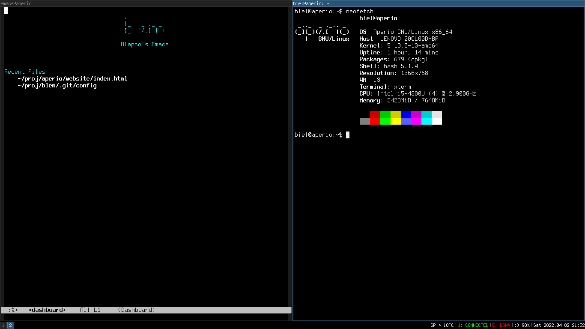

Aperio GNU/Linux comes from the Latin word “Aperio”. It means “to uncover, to open, to disclose”.

_.._ _ ._.. _
(_][_)(/,[ |(_)
| GNU/Linux
Aperio GNU/Linux comes from the Latin word “Aperio”. It means “to uncover, to open, to disclose”.